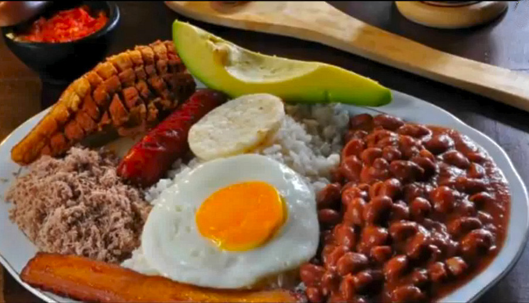
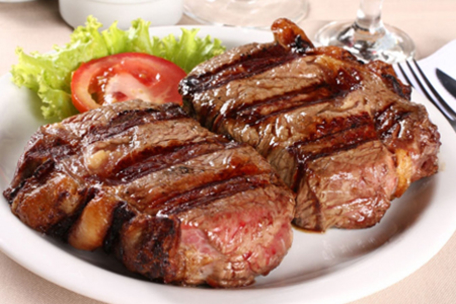

Cacerolazo
Favoritos:
Historial:
Bandeja Paisa
.
La gastronomía es una manifestación cultural más, en este artículo te hablaré de la bandeja paisa, que aunque es el plato tradicional de Antioquia se conoce en todo el territorio colombiano. Antes de hablarte de este plato, quiero explicarte un poco en qué consiste un almuerzo típico en Colombia, que se toma alrededor de las 12:30 del medio día. Estés haciendo lo que estés haciendo hay que dejarlo e ir a almorzar, luego no hay hora para terminar.El almuerzo típico de Colombia se compone de una sopa, de carne (vaca), pollo o verduras, y un seco. El seco es una bandeja con ensalada, arroz, patacón, y carne o pescado. No hay costumbre de tomar postre y tampoco beben café como punto final. Lo que sí incluye el “menú de almuerzo” es bebida, está muy extendida la costumbre de beber gaseosas, pero lo tradicional sería agua de panela o jugos naturales. Pero la bandeja paisa, en sí misma, por la cantidad de comida que lleva es un almuerzo y se sirve como tal.

Miguel P: Sin duda alguna este plato es uno de los mejores que he provado. Lo recomiendo al 100%, si viajas a Antioquia debes probarlo.

Daniela12: Es muy rica la bandeja paisa, pero evito comerla de seguido porque me engorda
Katy102: Se ve delicioso, averiguare los ingredientes y la preparare en casa para mi familia.
Churrasco Argentino
.
El Churrasco Argentino wa es uno de los elementos imprenscindibles en toda parrillada argentina. El churrasco es un corte específico también conocido como tira de asado.El Churrasco Argentino tiene como caracteristica principal la forma y el grosor del corte. Se trata de un corte perpendicular a las costillas de la vaca. Para preparar el churrasco adecuadamente, debemos hacer un corte de unos 4 o 5 centimetros de grosor. De esta manera conseguiremos una preparación tierna y jugosa.
Alejandro O: Ufff de las preparaciones de carnes mas deliciosas, no me canso de comerla y con un buen acompañamiento y chimichurry queda genial